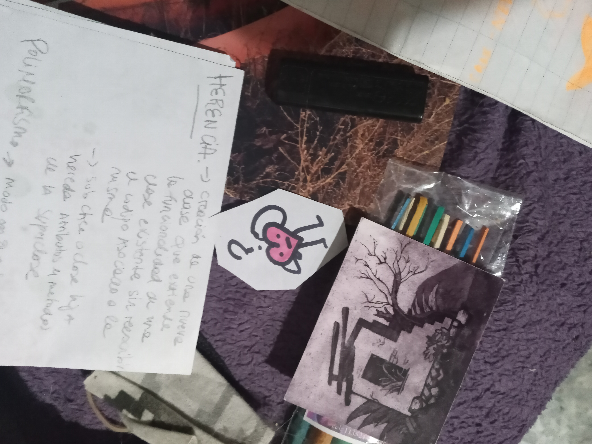
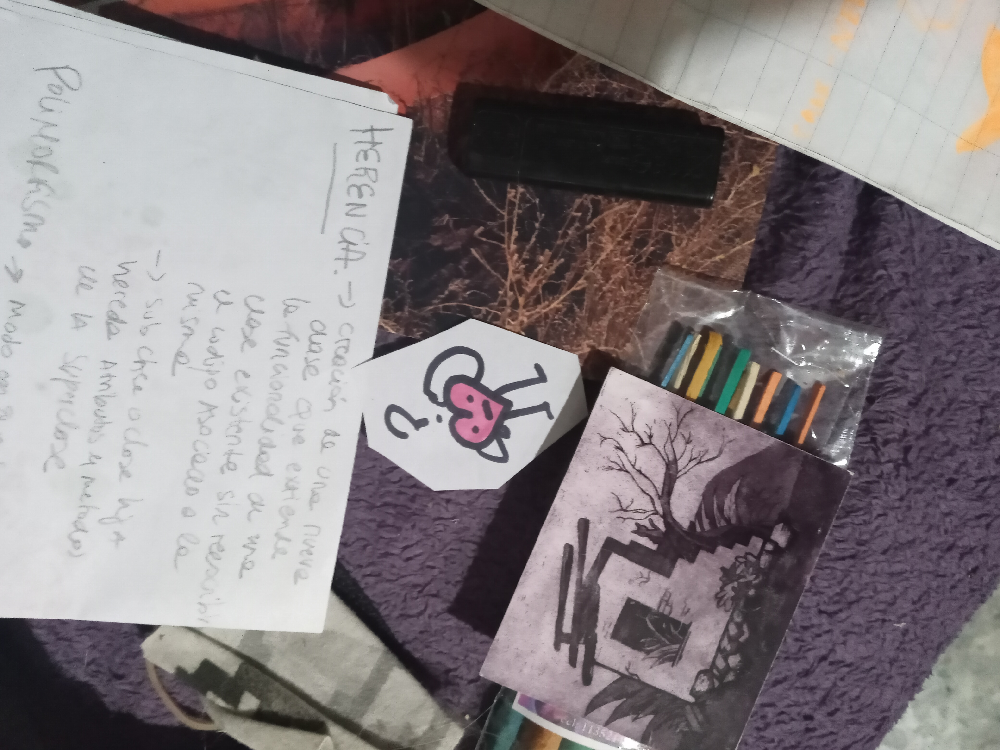
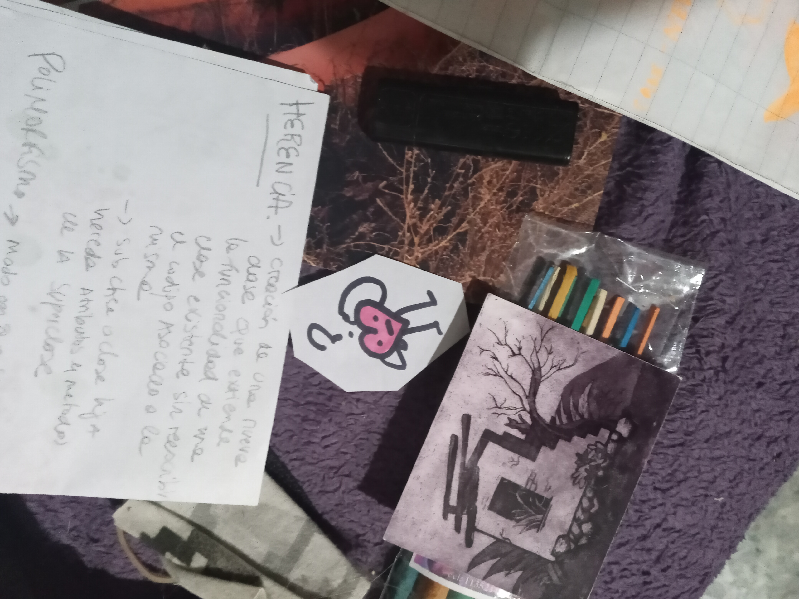
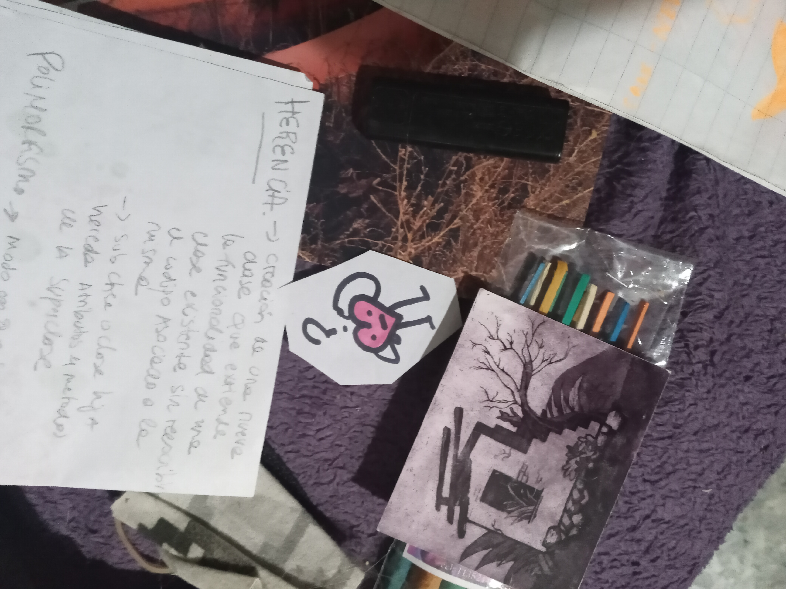

 

¿Que pasaría? ¿Que pasaría si algunos servidores se apagaran unas horas? ¿Que pasaría si tomara mas agua de la que mi existencia consume? Hoy voy a atravesar sentipensamientos desagradables sin alimentar un servidor empachado... y que mi tristeza se transforme en data. Hoy voy a salirme de ese formato donde mi mensaje no encuentra receptor. Salirme de esa red que nos capturó desde el fondo del mar.. usarla para intentar tejer algo bonito.